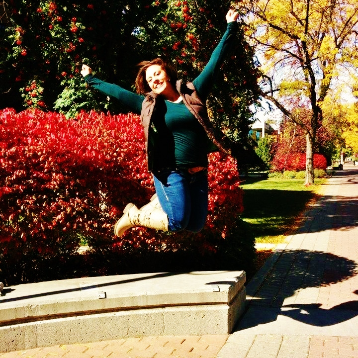

I didn't always know what I wanted to do, but I knew the kind of woman I wanted to be.
My name is Katelyn Johnston and I am a senior at Eastern Washington University. My major is in Technical Communications and I have two minors in French and Visual Communication Design along with a certificate in Public Relations. I hail from Clayton, Washington which is about an hour north of Cheney, which basically makes me a native of the area. I have always had a love for design and especially that of writing code in html. In the future I hope to become an editor for Penguin Random House Publishing, but to start out I hope to get an internship and work my way up.